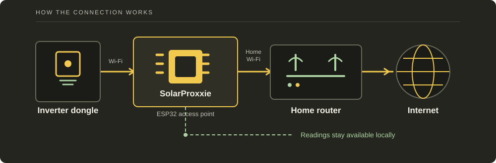

See what your inverter is doing, locally.
SolarProxxie sits between an Inteless Wi-Fi dongle and your home network. It shows supported inverter readings locally, with optional MQTT and Home Assistant publishing. If the Internet goes down, its limited offline mode can keep supported dongles reporting locally.

A small gateway for the dongle you already have.
The dongle joins the ESP32's Wi-Fi network. The ESP32 forwards its normal traffic through your home Wi-Fi.
Supported readings appear in the local web interface, alongside connection and diagnostic information.
When configured, readings can be published to MQTT and discovered by Home Assistant.
SolarProxxie monitors supported traffic; it does not change inverter settings. The packet formats come from captures and reference projects, so check values against your inverter before using them for billing or automation.
Supported dongles
- Inteless Wi-Fi dongle
- PV Inteless Wi-Fi dongle
Telemetry decoding supports the documented Inteless/Sunsynk single-phase 292-, 302-, and captured 306-byte packet formats. Compatibility depends on the dongle firmware and inverter; check the packet profile and readings on your device.
Install firmware
Use a desktop Chromium browser and a USB data cable to write the complete image to an original ESP32.
Full USB installation
This installs the bootloader, partition table, initial OTA metadata, and SolarProxxie application. It is intended for a new installation or complete replacement.
The serial-device chooser is opened by the browser. This site cannot select a port or start flashing without your click.
Before connecting
- Original dual-core ESP32 / ESP32-WROOM board with 4 MB flash
- Desktop Google Chrome or Microsoft Edge
- USB data cable, not a charge-only cable
- Any serial monitor or IDE closed
- Stable USB power during the installation
This build does not target ESP32-C3, C6, S2 or S3 boards.
Installation sequence
- 1Connect the ESP32 by USB.
Wait for the operating system to detect its CP210x, CH340, FTDI, or other serial bridge.
- 2Select “Connect ESP32 and install”.
Choose the serial device that appeared when the board was connected.
- 3Allow the full install to finish.
Do not disconnect the cable or close the page while flash writing and verification are in progress.
- 4Use manual boot mode if required.
If automatic connection fails, hold BOOT, tap EN/reset, start the connection, then release BOOT.
- 5Open initial setup.
After restart, join
SolarProxxie-Setupand browse tohttp://192.168.4.1. - 6Connect the dongle.
Use its normal provisioning method to join the protected SolarProxxie AP created during setup.
Updating an existing SolarProxxie device
Use the authenticated Firmware page on the ESP32 and upload only the application image. This path preserves configuration and uses the inactive OTA slot.
Command-line alternative
The complete source build can also be flashed from an ESP-IDF 5.4.2 terminal:
idf.py set-target esp32
idf.py build
idf.py -p COM5 flash monitorReplace COM5 with the actual serial port. Detailed Windows and Linux instructions are in the repository's installation guide.
Security and network exposure
The firmware is intended for a trusted local network. It is not an Internet-facing management service.
The dongle web interface should be treated as unprotected
The tested dongle exposed a plain-HTTP interface without a visible login. It included Wi-Fi/network configuration, reboot and firmware-upload controls, with no visible authorization or CSRF mechanism. Destructive upload tests were not performed, so unknown server-side checks cannot be ruled out.
How SolarProxxie limits dongle UI exposure
The dongle is normally behind the ESP32 NAPT boundary with no inbound mapping from the home network. An authenticated SolarProxxie administrator can temporarily map ESP32:8080 to the selected dongle's port 80.
Off by default
No permanent inbound mapping is created.
15-minute limit
The mapping expires automatically.
Connected target only
The target must be a configured dongle currently on the ESP32 AP.
Automatic closure
Logout, disconnect, MAC change, upstream loss, NAPT shutdown or restart closes it.
Implemented controls
- WPA2-PSK for the normal dongle access point
- Salted PBKDF2-HMAC-SHA256 administrator hashes
- Random, peer-bound sessions with 30-minute idle expiry
- HttpOnly and SameSite session cookies
- Separate CSRF tokens for state-changing requests
- Increasing login backoff
- Authenticated SolarProxxie OTA endpoint
- Content Security Policy and escaped UI content
- Bounded request, socket, queue and parser resources
Known limitations
- Management HTTP and MQTT are not encrypted
- Default builds do not enable Secure Boot or flash encryption
- Wi-Fi and MQTT credentials are recoverable from unencrypted NVS
- Application OTA images are not publisher-authenticated without separate signed-image provisioning
- AP clients are not mutually isolated
- Telemetry authenticity is not cryptographically verified
- PCAP files can contain private identifiers
About and sources
SolarProxxie combines ESP-IDF networking with packet layouts derived from captures and existing open-source references.
Project scope
The firmware is a local IPv4 gateway and telemetry monitor. It is not affiliated with Inteless, Sunsynk, Deye, E-Linter, or the inverter manufacturer. Product names remain the property of their owners.
Protocol behavior can change with dongle or inverter firmware. The repository keeps field evidence, capture notes, tests, and known limitations alongside the implementation.
Primary references and software
Project documentation
License
SolarProxxie is distributed under GPL-3.0-or-later. Individual bundled dependencies retain their own licenses.
Read the license